Caperucita Roja
TpFinal
Cuando comenzamos el grupo lo primero que hicimos fue seleccionar que juego y aventura íbamos hacer y nos decidimos por usar la aventura de la caperucita roja porque pensamos que se unía muy bien con un juego ya hecho de un tp anterior de frog. Juan Francisco oriento a objetos el juego de frog con estética de caperucita roja y Mateo Segui oriento a objetos la aventura grafica de la caperucita. Alrededor de tres semanas nos juntábamos en clase para decirnos como avanzamos por suerte no tuvimos ningún inconveniente en ese lapso de tiempo y cuando faltaba una semana nos pusimaos manos a la obra para unir las dos líneas de códigos del tp, tuvimos inconvenientes con las pantallas y algunos botones pero al final lo resolvimos y dando como resultado el tp6
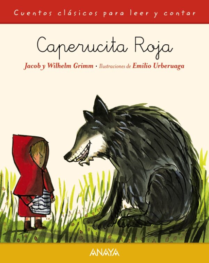 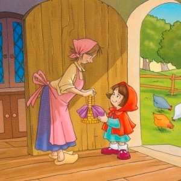 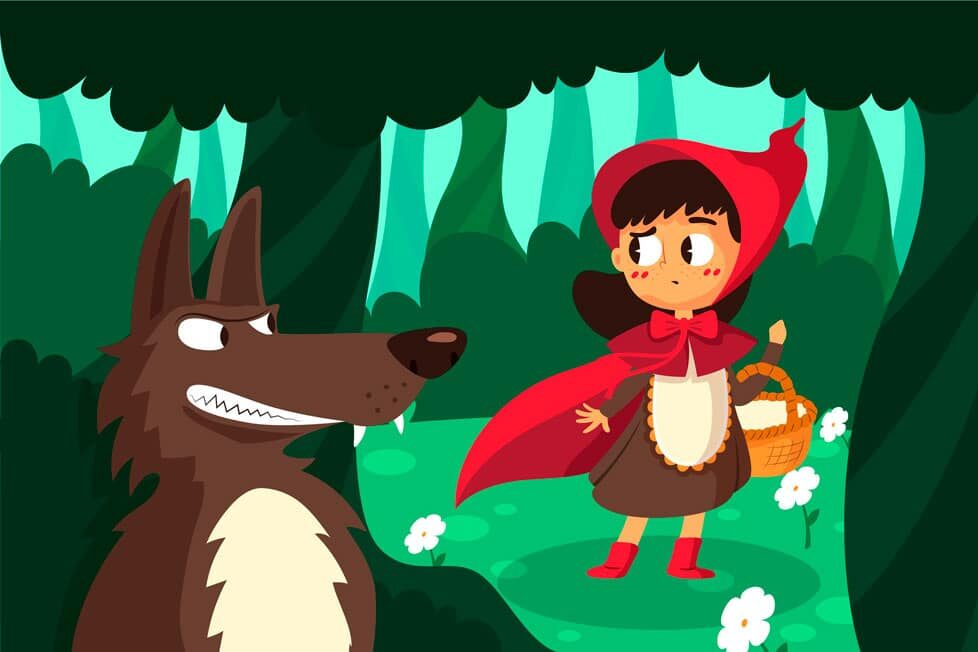 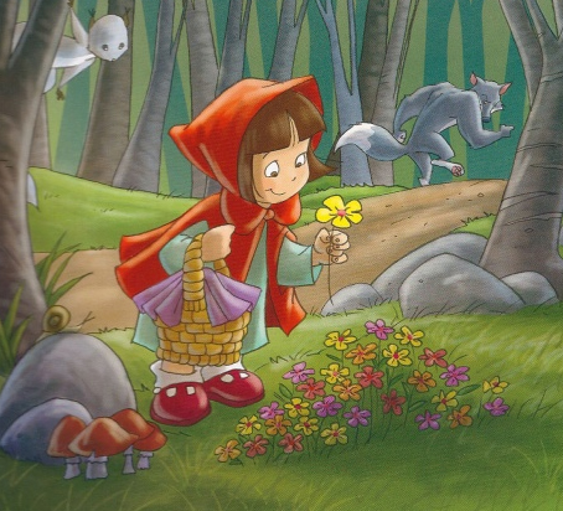
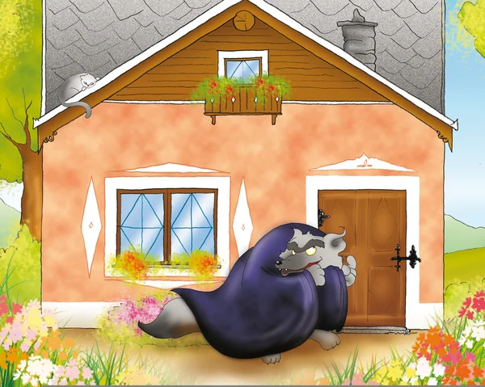
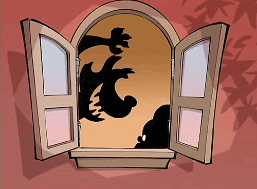
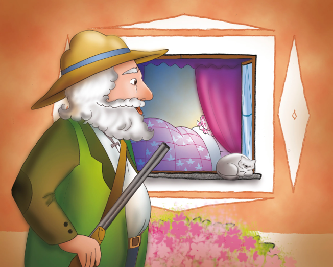
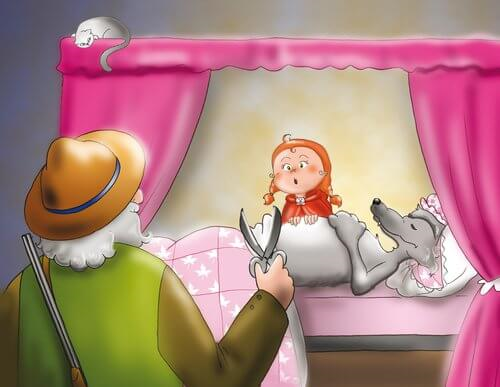
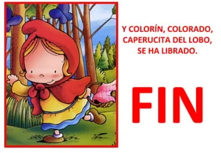
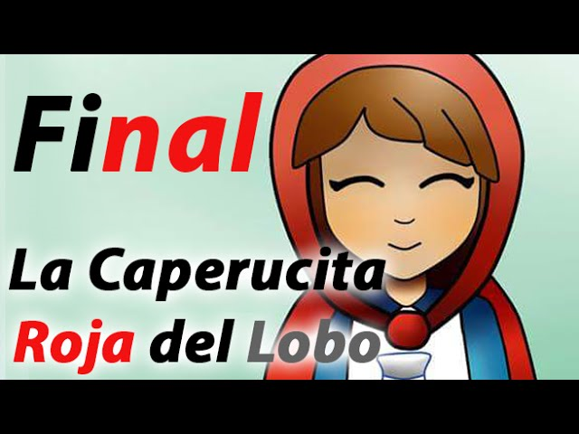
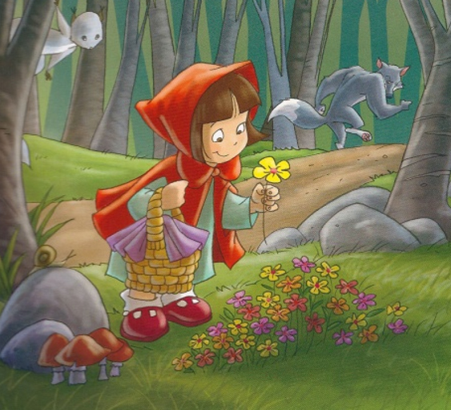
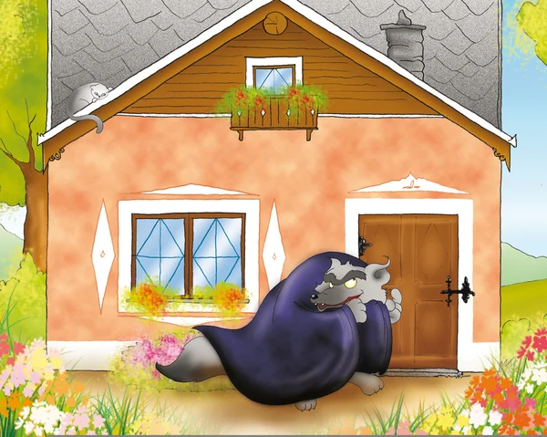
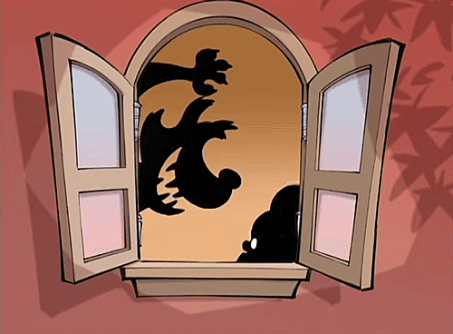
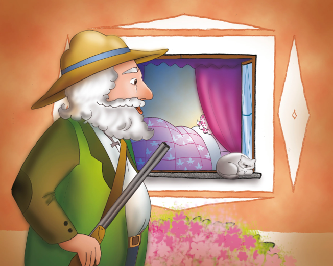
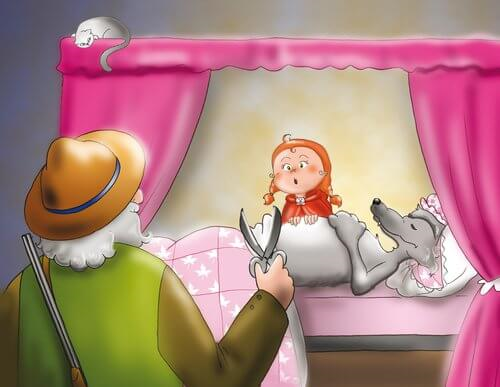
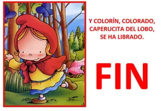
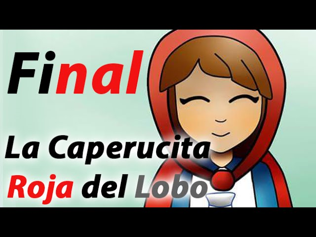
Estas son las imagenes usadas para el juego, empezando con el fondo y continuando con todos los lados de los personaje
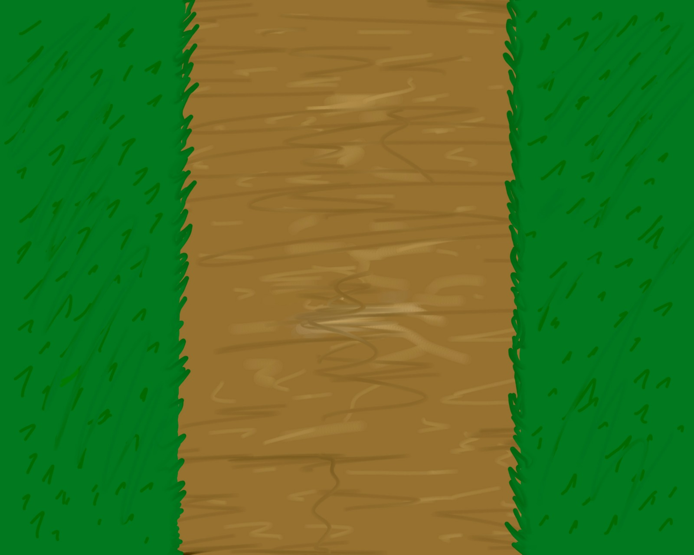 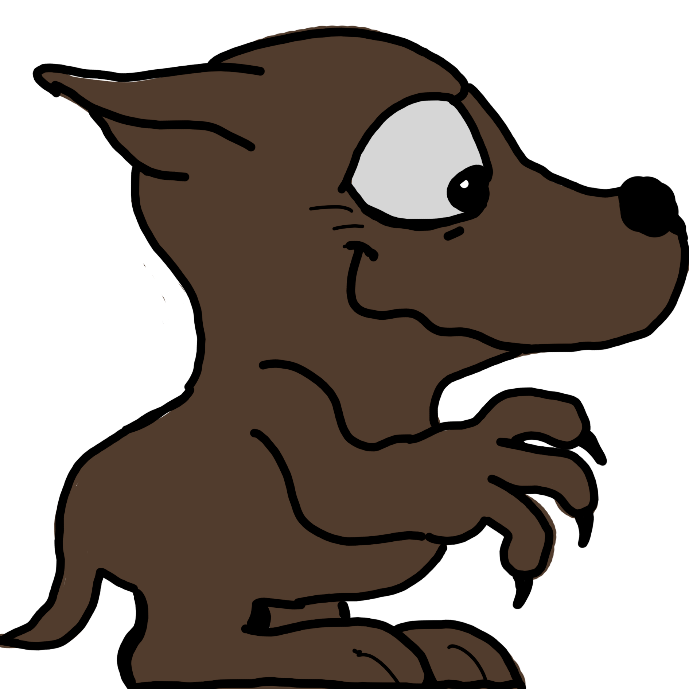 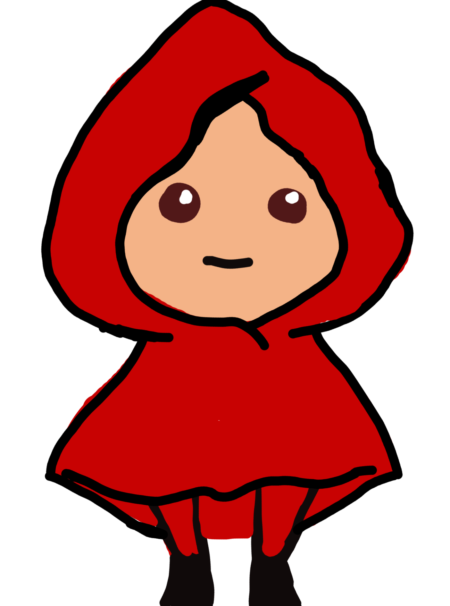 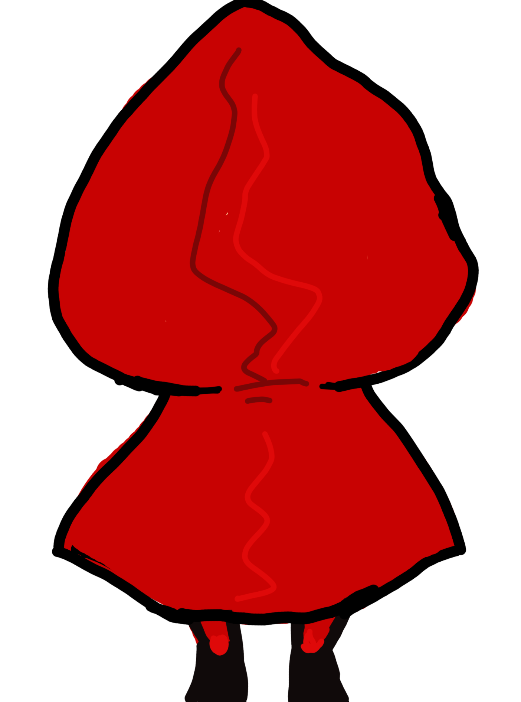 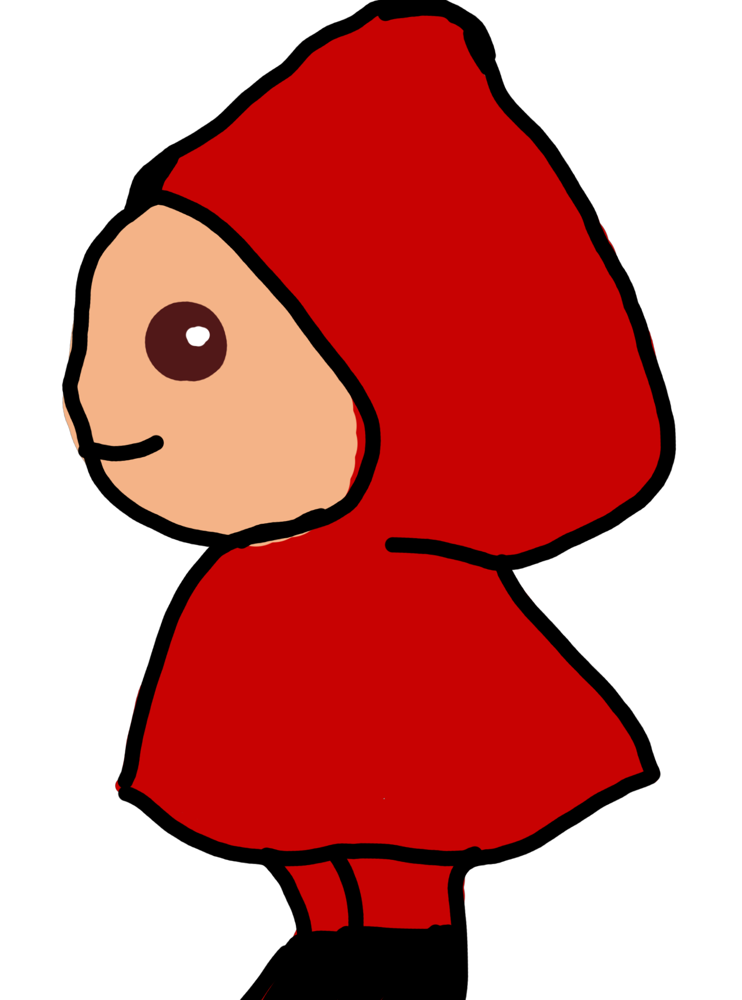 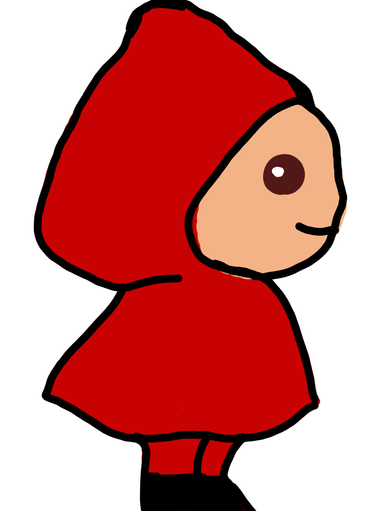Estos son los bocetos/inspiraciones de los personajes
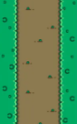 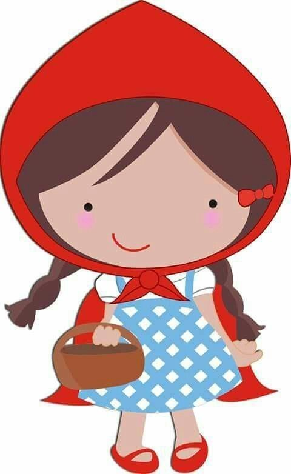 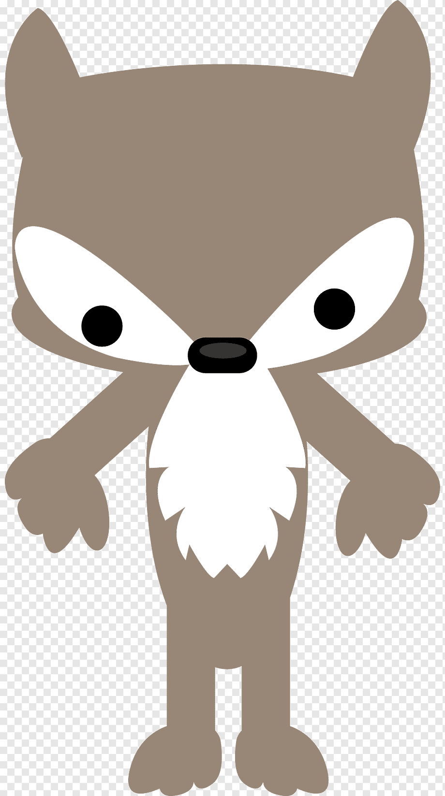